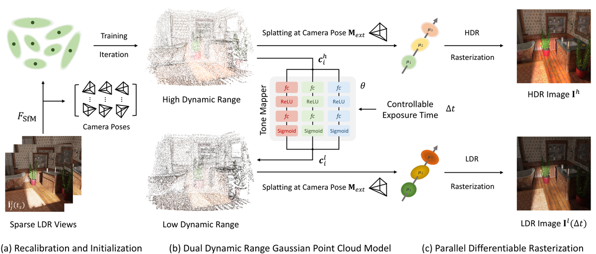
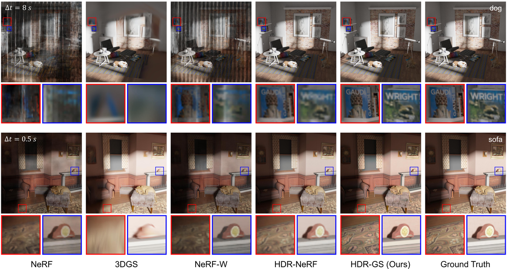
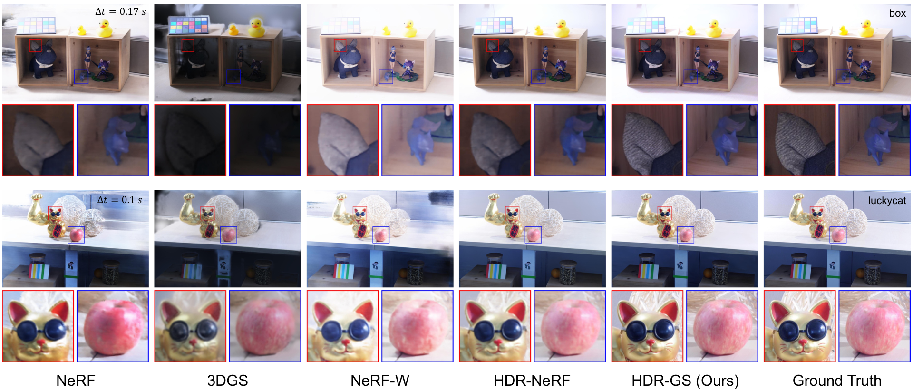
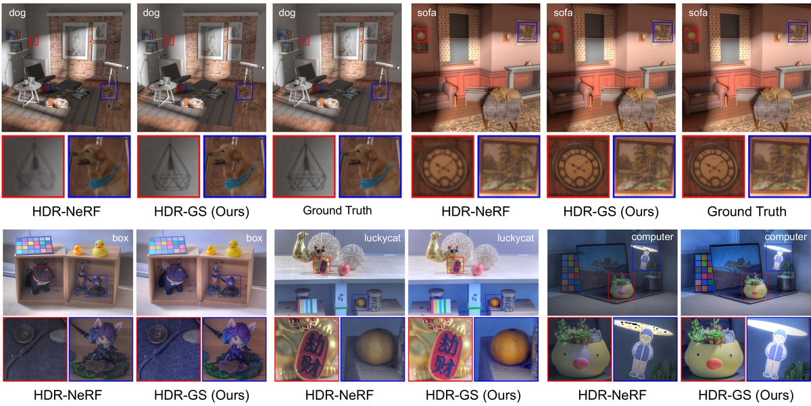

HDR-GS
简单摘要
这会导致非常亮或很暗区域的图像细节丢失、颜色失真以及显示人眼通常可以感知的光影中微妙渐变的能力有限。最近，3D高斯分布（3DGS）比基于NeRF的方法取得了令人印象深刻的推理速度，同时在LDR NVS上产生了可比的结果，这启发了HDR NVS的另一条技术路线。

这会导致非常亮或很暗区域的图像细节丢失、颜色失真以及显示人眼通常可以感知的光影中微妙渐变的能力有限。最近，3D高斯分布（3DGS）比基于NeRF的方法取得了令人印象深刻的推理速度，同时在LDR NVS上产生了可比的结果，这启发了HDR NVS的另一条技术路线。
核心创新
第一，高动态范围 (HDR) 新视图合成 (NVS) 旨在使用 HDR 成像技术从新视角创建逼真的图像。
第二，与普通低动态范围 (LDR) 图像相比，渲染的 HDR 图像可捕获更广泛的亮度级别，包含更多场景细节。
第三，在本节中，我们首先介绍DDR点云模型，然后介绍PDR流程，最后介绍HDR-GS的初始化和优化。
技术细节
从方法链路看，系统首先处理的是：该色调映射器根据相应的 HDR 颜色和可控的曝光时间渲染 LDR 颜色。
接下来真正起关键作用的是：高斯点云的 eq:ldr 被输入到两个并行的可微光栅化过程中，以联合渲染 HDR 和 LDR 视图，如图 2 所示。这样安排直接带来的收益是：HDR光栅化和LDR光栅化表示为 其中 和 表示渲染的HDR图像和LDR图像与曝光时间 ，指的是图像的高度和宽度，表示外在矩阵，指的是内在矩阵。
在训练和推理阶段，论文还额外考虑了：曝光条件的变化可能会降低 SfM 的准确性。

3.1 双动态范围高斯点云模型
其中心位置、协方差、不透明度、LDR 颜色和 HDR 颜色分别表示为 、 、 、 和。除了这些属性之外，每个属性还包含控制 LDR 视图的光强度的曝光时间和三个带有参数的全局共享 MLP。我们建议使用 MLP 来学习色调映射过程。
3.2 并行可微光栅化
高斯点云的 eq:ldr 被输入到两个并行的可微光栅化过程中，以联合渲染 HDR 和 LDR 视图，如图 2 所示。HDR光栅化和LDR光栅化表示为其中 和 表示渲染的HDR图像和LDR图像与曝光时间 ，并且指的是图像的高度和宽度。然后我们介绍并行光栅化过程的细节。
3.3 初始化和优化
曝光条件的变化可能会降低 SfM 的准确性。与HDR-NeRF类似，使用groundtruth CRF校正系数来限制合成场景上的HDR颜色。并表示在第 - 个视点处渲染的真实 HDR 图像。
$$ \mathcal{G} = \{G_i(\bm{\mu}_i, \mathbf{\Sigma}_i, \alpha_i, \bm{c}_i^l, \bm{c}_i^h, \Delta t, \theta)~|~i = 1, 2, \dots, N_p\}, $$
这条公式定义了论文中的一个核心计算关系。阅读时可以先确认左侧要得到的结果，再看右侧由 G、bm、mu、i 如何共同构成这个结果。
$$ \mathrm{\bf \Sigma}_i = \mathbf{R}_i \mathbf{S}_i \mathbf{S}_i^\top \mathbf{R}_i^\top. $$
这条公式定义了论文中的一个核心计算关系。阅读时可以先确认左侧要得到的结果，再看右侧由 mathrm、bf、Sigma、i 如何共同构成这个结果。
$$ \bm{c}_i^l = f_{TM} (\bm{c}_i^h \cdot \Delta t), $$
这条公式定义了论文中的一个核心计算关系。阅读时可以先确认左侧要得到的结果，再看右侧由 bm、c、i、l 如何共同构成这个结果。
$$ \text{log}~f_{TM}^{-1} (\bm{c}_i^l) = \text{log}~\bm{c}_i^h + \text{log}~\Delta t, \vspace{0.2mm} $$
这条公式定义了论文中的一个核心计算关系。阅读时可以先确认左侧要得到的结果，再看右侧由 log、bm、c、i 如何共同构成这个结果。
$$ \bm{c}_i^l = (\text{log}~f_{TM}^{-1})^{-1}(\text{log}~\bm{c}_i^h + \text{log}~\Delta t). \vspace{0.3mm} $$
这条公式定义了论文中的一个核心计算关系。阅读时可以先确认左侧要得到的结果，再看右侧由 bm、c、i、l 如何共同构成这个结果。
$$ \bm{c}_i^l = g_{\theta}(\text{log}~\bm{c}_i^h + \text{log}~\Delta t), \vspace{0.3mm} $$
这条公式定义了论文中的一个核心计算关系。阅读时可以先确认左侧要得到的结果，再看右侧由 bm、c、i、l 如何共同构成这个结果。
$$ \begin{aligned} \bm{c}_i^h (\mathbf{d}, \mathbf{k}) &= \text{exp}(\sum_{l = 0}^{L} \sum_{m = -l}^{l} k_l^m~Y_l^m(\theta, \phi)), \\ \end{aligned} $$
这条公式定义了论文中的一个核心计算关系。阅读时可以先确认左侧要得到的结果，再看右侧由 aligned、bm、c、i 如何共同构成这个结果。
$$ \bm{c}_i^l (\mathbf{d}, \mathbf{k}, \Delta t) = g_{\theta}(\sum_{l = 0}^{L} \sum_{m = -l}^{l} k_l^m~Y_l^m(\theta, \phi) + \text{log}~\Delta t + b), $$
这条公式定义了论文中的一个核心计算关系。阅读时可以先确认左侧要得到的结果，再看右侧由 bm、c、i、l 如何共同构成这个结果。
实验结论
实验部分首先关心的是：与 类似，我们还定量评估色调映射域中渲染的 HDR 图像，并定性显示由 Photomatix pro 色调映射的 HDR 结果。
对比结果表明，(i) 与最近最好的方法 HDR-NeRF 相比，我们的 HDR-GS 在 LDR-OE 和 HDR 轨道上的性能优于它 2.03 和 1.91 dB，同时享受快 1000 倍的推理速度，并且只花费 6.3% 的训练时间。进一步结合定性现象和消融分析，可以看出：与最近最好的方法 HDR-NeRF 相比，我们的 HDR-GS 在 LDR-OE 和 LDR-NE 上的 PSNR 高出 3.84 和 0.23 dB。
| color3Method | Baseline | + Camera Recalibration | + SfM Points | + DDR Model |
|---|---|---|---|---|
| HDR | - | - | - | 38.31 |
| LDR-OE | 12.35 | 14.62 | 19.46 | 41.10 |
| LDR-NE | 11.83 | 14.41 | 18.97 | 36.33 |
| #1@#2 |
|---|



4.1 实验设置
实验主要验证：我们采用峰值信噪比PSNR（越高越好）和结构相似性指标度量SSIM（越高越好）来定量评估客观性能。结果上，采用学习的感知图像块相似度 LPIPS（越低越好）作为感知度量。
4.2 定量结果
实验部分首先关心的是：我们将 HDR-GS 与三种基于 NeRF 的方法（NeRF 、 NeRF-W 和 HDR-NeRF ）以及原始 3DGS 进行比较。
对比结果表明，(i) 与最近最好的方法 HDR-NeRF 相比，我们的 HDR-GS 在 LDR-OE 和 HDR 轨道上的性能优于它 2.03 和 1.91 dB，同时享受快 1000 倍的推理速度，并且只花费 6.3% 的训练时间。进一步结合定性现象和消融分析，可以看出：(ii) 与原始 3DGS 相比，我们的 HDR-GS 在 LDR-OE 和 LDR-NE 上分别高出 21.64 和 17.36 dB。
4.3 定性结果
实验主要验证：LDR小说视图渲染在合成（狗和沙发）和真实（盒子和幸运猫）场景上不同曝光时间的比较如图1所示。结果上，可以看出NeRF、3DGS和NeRF-W无法控制曝光。
4.4 消融研究
实验主要验证：在本节中，我们采用合成数据集进行消融研究。结果上，我们采用以原始坐标（NDC）为基线训练的3DGS对合成数据集进行分解消融。
理解评价
如果把这篇论文放回问题背景里看，它真正的价值在于：高动态范围 (HDR) 新视图合成 (NVS) 旨在使用 HDR 成像技术从新视角创建逼真的图像。这说明作者不是只补一个局部模块，而是在重新组织问题该怎样被解决。
最能支撑这个判断的，还是实验给出的证据：与 类似，我们还定量评估色调映射域中渲染的 HDR 图像，并定性显示由 Photomatix pro 色调映射的 HDR 结果。换句话说，这些设计并不只是概念上更完整，而是实实在在改变了最终结果。
当然，它离真正成熟的方案还有距离：这项工作的主要限制是基于 3DGS 的方法的内存使用量很大，并且对于某些低 RAM 移动设备来说可能无法承受。后续更值得继续推进的方向，是 后续更值得继续推进的方向，是同时提升效率、泛化能力以及在更复杂场景下的稳定性。